Diagnóstico
Sedentarismo.
Por que tendões, ênteses e bursas adoecem, como chegar ao diagnóstico pela conversa, pelo exame e pela imagem, e como tratar do punho ao pé.
Organizada a partir da aula e dos slides do professor, com os termos médicos conferidos e a linguagem ajustada. A legenda de cores está na página 2.
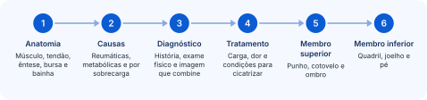
O músculo faz a força, o tendão leva essa força até o osso e se prende nele num ponto muito forte. Bolsinhas com líquido deixam tudo deslizar. Quando uma dessas peças adoece, a dor vem das partes moles, e não do osso.
As lesões de músculos, tendões e bursas, as chamadas partes moles do sistema musculoesquelético, são muito frequentes: quase todo mundo já teve ou vai ter uma dor dessas. E elas não aparecem só em quem faz atividade física.
O músculo tem um ventre, a carne vermelha, e um tendão em cada ponta, que se agarra no osso de um lado e no músculo do outro, numa zona de transição. O osso é a estrutura rígida, a articulação é a dobradiça, e o movimento sai sempre de um par de músculos, um agonista e um antagonista (flexão e extensão, contração e relaxamento). Esse trabalho automático, que acontece sem a gente pensar, se chama propriocepção.
O branco do tendão vai se afinando e vira a cobertura do músculo, a fáscia (quando é bem fininha, epimísio). Quando a fáscia se alarga, chama-se aponeurose; a fáscia lata, na coxa, é um exemplo. A cápsula da articulação tem estrutura parecida e, onde engrossa, forma os ligamentos, alguns bem específicos, como o cruzado anterior do joelho.
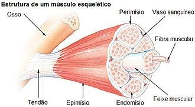
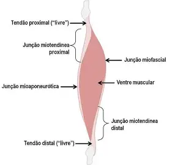
Imagens dos slides da aula: a estrutura do músculo esquelético (à esquerda) e as junções entre o ventre e o tendão, como a junção mioaponeurótica (à direita).
A ponta de cima (proximal) do músculo é a origem; a de baixo (distal) é a inserção. A ligação do tendão com o osso, aquela bem forte, é a êntese. O nome vale também para os pontos em que o ligamento e a cápsula articular se prendem no osso.
Bursa quer dizer bolsa, em latim. É uma bolsinha cheia de um líquido que parece óleo (na galinha dá para ver bem) e existe em todas as articulações, até nos maléolos. Ela protege as saliências do osso e deixa a parte mecânica, músculo e tendão, escorregar mais fácil.
A bainha sinovial é parecida, mas envolve o tendão: tem uma camada de fora e outra grudada no tendão, que desliza dentro dela como o cabo de aço do acelerador dos carros antigos (no Fusca, ele arrebentava e se consertava na estrada com alicate e arame). Assim existem tendões bem compridos: o músculo que dobra o dedo fica no antebraço, e o tendão atravessa a mão até a ponta da falange distal; o fibular sai da perna e chega à lateral do pé, perto da base do quinto dedo. Outros são curtos e presos a músculos fortes, como os do quadril.
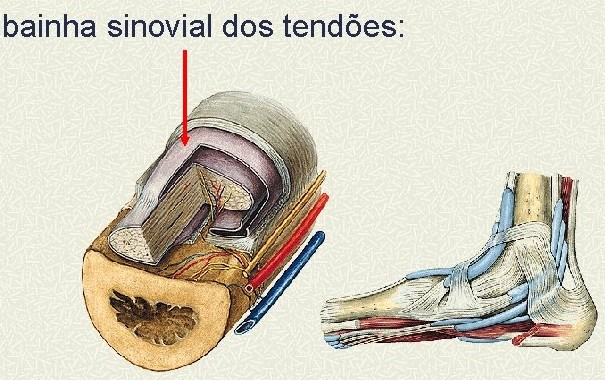
Imagem dos slides da aula.
Os tendões passam sob faixas brancas que os seguram no lugar, chamadas de retináculos ou túneis. Sem elas, o tendão salta do seu caminho, o que pode acontecer em algumas doenças ou num ferimento da região. A mão tem vários desses túneis, e um deles é o lugar da tenossinovite de De Quervain (capítulo 05).
O tendão é rígido, quase como o osso, e tem poucos vasos, todos da ponta da cadeia: é microcirculação. Isso pesa na cicatrização: o músculo cicatriza muito mais fácil que o tendão. E toda doença que estraga a microcirculação repercute no tendão.
Algumas formas começam lesando a microcirculação.
As periféricas costumam ser doenças reumáticas.
No fumante pesado, a cicatrização do tendão é mais incerta.
“Quando não souber uma coisa, fale mal do cigarro, que a chance de acertar é grande.”
Há estudos sobre isso, principalmente de cirurgiões de ombro, que reparam muito tendão. Nos Estados Unidos, onde a medicina é muito judicializada, o cirurgião chega a gravar a consulta antes da operação, para mostrar depois que avisou o fumante sobre o risco na cicatrização.
Os slides mostram três rupturas: a do ventre de um músculo; a do manguito rotador, os quatro músculos importantes do ombro que fazem o movimento (fora o deltoide); e a dos rotadores, na parte de trás do quadril. Entesopatia, bursite e tendinite são coisas do dia a dia: todo mundo já ouviu falar.
O tendão adoece quando falta sangue na ponta da circulação (diabetes, cigarro), quando o próprio corpo o ataca, ou, o mais comum, quando a carga passa do que ele aguenta: esporte, trabalho, salto alto e até a falta de músculo.
As causas valem para o tendão e para as estruturas parecidas com ele: cápsula, ligamentos e fáscias. Ficam em três grupos.
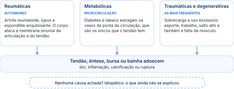
Antes eram chamadas de inflamatórias, mas o nome melhor é reumáticas: são as doenças que o reumatologista trata, numa interface constante com a ortopedia. As mais comuns aqui são a artrite reumatoide (talvez a mais comum), o lúpus eritematoso sistêmico e a espondilite anquilosante.
Na artrite reumatoide, uma doença autoimune, o organismo desregulado passa a tratar a membrana sinovial como inimiga e tenta destruí-la, como o leucócito faz com a bactéria numa infecção. A membrana sinovial da articulação e a que envolve o tendão são a mesma estrutura. Por isso a doença atinge mais as articulações pequenas, das mãos e dos pés (as interfalângicas), mas também os tendões, e pode até romper um retináculo.
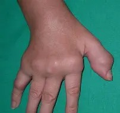
Imagem dos slides da aula.
A artrite reumatoide não lesa a cartilagem diretamente, mas a inflamação crônica pode lesá-la e causar artrose; às vezes a articulação do quadril fica tão lesada que precisa de prótese. O lúpus é bem parecido (há pacientes a quem um reumatologista disse lúpus e outro, artrite reumatoide). A espondilite é diferente: lesa o esqueleto axial, e a pessoa vai ficando rígida e dobrada para a frente, na “posição do esquiador”.
“Na cirurgia, você está fazendo a reabilitação daquela articulação específica; você não trata a doença. A doença quem trata é o reumatologista.”
Diabetes e tabaco estragam a microcirculação. Um exemplo já estudado é a doença de Charcot: algo estraga a microcirculação do nervo, o nervo para de funcionar direito, a propriocepção se perde e a articulação acaba desmontada. Quem tem a microcirculação afetada no nervo sensitivo e motor provavelmente a tem também no tendão e na pele; por isso esses pacientes fazem lesões de pele e doença vascular periférica. Vale para o corpo todo.
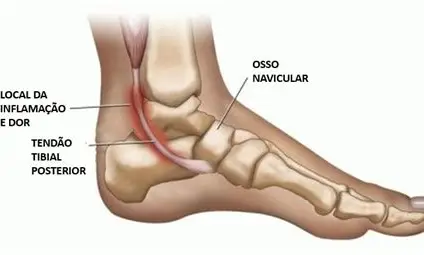
Imagem dos slides da aula.
É uma tendinopatia muito frequente em mulheres de 40 a 50 anos, que pode chegar a romper o tendão do tibial posterior. Se a causa fosse só a microcirculação, por que não apareceria também nos homens? Há uma parte que ainda não se sabe direito.
Idiopático é o que ainda não se sabe explicar, e muitas vezes não é idiopático de verdade: faltou investigar. Não serve de resposta para o que tem causa conhecida. Numa prova anterior, muita gente marcou “idiopática” numa questão sobre as formas de contaminação, que são três e conhecidas, e errou.
São as do dia a dia, ligadas ao esporte, ao trabalho e à sobrecarga. O nome “lesão por esforço repetitivo” caiu em desuso por causa dos problemas trabalhistas: a pessoa passava a se ligar à ideia de não poder mais trabalhar. Em teoria, se a causa é a sobrecarga, tirar a sobrecarga e reabilitar a pessoa para outra função deveria resolver; mas há quem nunca melhore, e isso acontece no mundo inteiro.
Sobrecarga é o ombro e o cotovelo do tenista, o pianista, quem descarrega sacas de 60 quilos de um caminhão todo dia (hoje há máquinas para isso, justamente porque o corpo não aguenta). No esporte, há estudos das lesões de cada posição.
Não confunda a lesão do tendão com a entorse, a lesão traumática do ligamento (graduada em tipos 1, 2 e 3). No ligamento, o trauma arrebenta uma estrutura sadia. Na tendinopatia, o tendão (ou a membrana sinovial, ou o conjunto) vai ficando doente por algum motivo.
Cada pessoa tem o seu arco plantar, como uma impressão digital: pé plano (chato), normal ou cavo; nos tênis, as palavras usadas são pronado, neutro e supinado. Não são doenças, são variantes normais. O problema começa quando esse pé sobe num salto.
Por isso os ossos de trás são tão maiores que os da frente. O maior esforço vem no empuxo: o tríceps sural puxa o calcâneo e projeta o corpo para a frente.
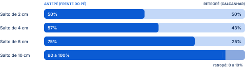
Tabela dos slides da aula, em gráfico.
Registro. A mesma tabela dos slides traz, para o pé sem salto, 43% do peso no antepé e 57% no retropé; na aula, vale 10% e 90%.
De vez em quando, tudo bem: usar salto numa festa dá, no máximo, uma semana de dor no pé. Todo dia, ele provoca doenças do antepé, normalmente bursites da cabeça do quinto metatarso e alterações das articulações da frente do pé.
Muita lombalgia crônica tem a ver com o tema desta aula. A coluna tem ligamentos e tendões em cada articulação, e a musculatura paravertebral é muito forte; ali podem aparecer tendinites, apofisites e entesites nas apófises espinhosas e transversas, onde se prendem ligamentos muito fortes.
Bem-sucedido, trabalha 12 horas por dia, não faz atividade física, está acima do peso, toma remédio para dormir e o intestino não funciona direito. Começou a ter dor nas costas, e não há outra doença.
Sedentarismo.
Atrofia. Com o músculo ruim, até ficar sentado o dia inteiro sobrecarrega tendões, ligamentos e articulações.
O músculo divide o esforço. Com músculo bom, essas estruturas se sobrecarregam pouco e ficam bem vascularizadas.
O mesmo vale para o médico de 40 anos que sai de um plantão de 12 horas direto para um consultório lotado, com dor nas costas e irritado: é sobrecarga física e mental. A atividade física não serve só ao coração e ao pulmão; músculos, tendões e articulações também precisam dela para funcionar bem. O slide resume a conta: preparo físico contra demanda.
A lombalgia, com as fraturas e as doenças da coluna lombar, tem aula própria daqui a alguns dias.
O diagnóstico sai quase todo da conversa e do exame com as mãos. A imagem confirma e afasta o que não é, e só vale se combinar com o que o paciente sente.
Numa manhã de consultório com sete pacientes antes da visita, das 8h às 10h30, sobram uns 20 minutos para cada um: dá para conversar bem e pelo menos palpar o paciente. Por isso é preciso ter uma rotina de consulta, para não deixar de descobrir, por exemplo, se a pessoa tem diabetes. A única forma de saber é perguntar.
O exame físico vai direto à estrutura que a história fez suspeitar: tendinite da mão pede exame da mão; dor nas costas, exame das costas.
O raio-X é barato (uns 20 reais) e feito em qualquer lugar; o ultrassom pode ser necessário quando o quadro não melhora; a ressonância é eficaz, mas quem pede precisa saber ler. Na dor nas costas de uma mulher de 65 anos, por exemplo: é um tumor? É osteoporose? O raio-X ajuda a responder. E quem pede o exame tem de saber o que é normal, de preferência mais do que o radiologista daquela área. Na ortopedia, com as subespecialidades, é comum discutir a ressonância com o radiologista, como o cardiologista discute o laudo do eletrocardiograma.
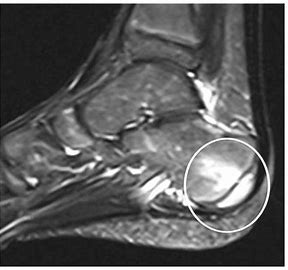
Imagem dos slides da aula: ressonância do pé de uma criança.
Diante desse branco “rachado” no osso, a turma respondeu fratura. Não é: é a fise de crescimento, sinal de esqueleto imaturo. O quadro é a doença de Sever, uma osteocondrite, um problema de vascularização na apófise do calcâneo. Na ressonância, compare sempre com o osso normal; na mesma imagem há outra fise, a da tíbia.
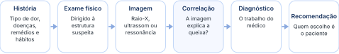
Só vale pedir o exame que faz diferença no raciocínio: se confirmar a doença, ele sela o diagnóstico e leva a uma recomendação de tratamento, às vezes mais agressiva. A função do ortopedista é desvendar a correlação entre os sintomas e a imagem: a dor e a dificuldade da pessoa vêm mesmo daquilo que apareceu no exame?
A ressonância é tão sensível que mostra as alterações dos discos da coluna desde os 40 anos; aos 60, todos têm alteração do disco até no raio-X, porque faz parte do envelhecer. Quando a ressonância chegou, essas alterações viraram motivo para operar, e muita cirurgia desnecessária foi indicada porque algo apareceu no exame. Hérnia de disco é um conjunto de sintomas; a imagem só sela o diagnóstico (e “tenho três hérnias de disco” pode ser só o disco envelhecendo). O mesmo erro aconteceu com o esporão de calcâneo, no capítulo 06.
Com o diagnóstico na mão, o médico recomenda; não obriga. O tratamento quase sempre tem mais de uma opção, o paciente pode pedir a opinião de outro médico, e quem escolhe é ele (numa perna quebrada, as opções são poucas, mas a escolha continua sendo dele).
“Eu prefiro dizer que é recomendado, porque é o paciente que tem que escolher isso.”
Tratar é corrigir a carga errada, aliviar a dor e deixar o corpo em condições de cicatrizar. O remédio deixa a pessoa confortável; quem cura é o corpo, com tempo e com o paciente fazendo a parte dele.
O tratamento básico é melhorar o estilo de vida: a pessoa precisa entender que a doença tem muito a ver com ela, e não com o remédio.
Explicar a carga errada e mudar o costume: salto, trabalho, gesto do esporte.
Remédio, fisioterapia, bloqueios, infiltrações, repouso relativo.
Tratar a doença de base: diabetes, cigarro, sarcopenia, doença reumática.
O médico precisa conhecer a biomecânica e explicá-la. As pessoas entendem o próprio problema e, entendendo, conseguem mudar o costume. Proibir não funciona: acabar com a indústria do sapato de salto alto não vai dar certo, e usar salto de vez em quando talvez não faça mal. Com o cigarro, o raciocínio é parecido: um fumante pesado, de uma carteira por dia, fuma mais de um cigarro por hora acordado. É preciso falar mal do cigarro para a pessoa entender, e discutir isso com ela.
“Eu sempre ensinei para os meus filhos que a droga não é um problema porque ela é ruim; ela é muito boa de usar, por isso que é o perigo. O problema é viciar.”
Os analgésicos tratam a dor; o anti-inflamatório a trata indiretamente, ao tratar o processo inflamatório. Os slides listam também:
Tudo isso depende do lugar da inflamação e tem pouca base científica: nenhum tratamento é “80% melhor que o outro”, e nem a dose é bem conhecida. Não existe receita de bolo. O que vai na seringa e onde ela entra dependem do diagnóstico: faça o diagnóstico da causa sempre que possível, porque ele talvez seja o mais importante.
Correr faz parte da saúde física e mental de quem corre todo dia: ele produz substâncias neuroquímicas importantes, e fazer 3 ou 4 km tranquilo faz mais bem do que parar. Já a imobilização total produz uma atrofia muscular tão importante que a recuperação fica mais difícil do que a doença.
É tratar a doença de base: conversar com o diabético descontrolado que não quer mudar o jeito de viver; mandar o paciente reumático de volta ao reumatologista (se brigou com ele, que procure outro com quem se acerte); pedir atividade física a quem não faz. O slide lista o tabagismo, as doenças metabólicas (obesidade, diabetes, reumáticas), os problemas biomecânicos e as causas idiopáticas, que também precisam ser abordadas: muitas vezes deixam de ser idiopáticas.
É a perda de massa muscular. Pode vir da alimentação (o vegano precisa cuidar muito da proteína), da idade (o idoso que come mal e não estimula o músculo), do sobrepeso sem atividade física (relação ruim entre massa magra e massa gorda) e dos remédios para emagrecer, que tiram gordura mas também massa magra. Tudo é equilíbrio.
O slide resume o tratamento das doenças do tendão: estabelecer causa e efeito; fazer a reabilitação biológica e funcional, que é deixar a pessoa mais ou menos como era antes; e tratar de forma compartilhada. O fisioterapeuta aparece porque é quem fica com o paciente; não basta alguém que “faz uma injeção e vai embora”.
Médico, fisioterapeuta e paciente têm de ser parceiros uns dos outros: isso é multidisciplinar. Se o paciente não faz a parte dele, não funciona, e a doença pode levar seis meses para sarar. O tenista com campeonato no fim do ano e uma epicondilite quer o remédio que resolva em 15 dias, ou o fisioterapeuta que resolva com duas massagens e três movimentos milagrosos da internet.
“Os tratamentos são clássicos. O que não é clássico é a nossa angústia e a nossa rapidez. E a cicatrização não tem turbinadores, infelizmente.”
No punho, o polegar trabalhando demais inflama o primeiro túnel de tendões. No cotovelo, o esforço repetido inflama os tendões que nascem dos dois lados, e a bolsa de trás incha com pancada. No ombro, quando os músculos que seguram a cabeça do úmero falham, ela sobe e espreme a bolsa.
Descrita em 1895, é a inflamação do primeiro compartimento dorsal do punho. O dorso do punho tem seis túneis de tendões: o sexto fica sobre a ulna, e o primeiro, do lado do polegar, leva o extensor curto e o abdutor longo do polegar. Inflamados, o tendão e a bainha sinovial engrossam dentro do túnel, e quanto mais inflama, mais dói.
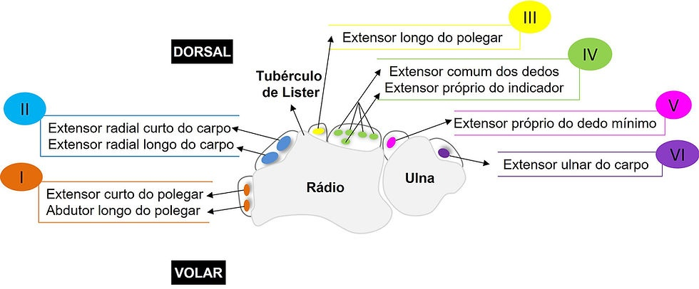
Imagem dos slides da aula: corte do punho na altura do rádio e da ulna, com os seis compartimentos dorsais; o primeiro (I) é o da doença.
Vale fazer o teste em si mesmo para sentir como o tendão é tracionado.
Analgésico e anti-inflamatório; órtese que prende o polegar e impede o movimento, por algumas horas por dia ou poucos dias; logo depois, movimento para alongar o tendão e melhorar a função mecânica; fisioterapia; infiltração (corticoide ou outros). A maioria resolve sem cirurgia, que é infrequente: fica para quando a bainha engrossa tanto que não desinflama mais.
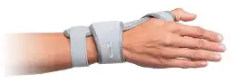
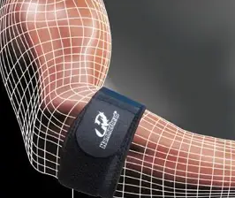
Imagens dos slides da aula: a órtese que prende o polegar (De Quervain) e a braçadeira do cotovelo (epicondilite lateral).
A lateral pode ser confundida com a compressão do nervo radial; às vezes se pede uma eletroneuromiografia para diferenciar, mas não é o comum. O diagnóstico, segundo o slide, junta dor que aumenta aos poucos, dor à palpação e dificuldade funcional.
A causa pode ser clara (um uso repetitivo, causa e efeito) ou não aparecer: o tendão degenera por um problema dele, e o quadro cai no idiopático. Há pessoas com dor em todos os tendões (quadril, pé, ombro, cotovelo); é comum chamá-las de reumáticas e mandá-las ao reumatologista, que também não acha exame positivo.
Começa do começo: remédio, explicação (o tenista de fim de semana pode esperar um pouco) e fisioterapia, com alongamentos, analgesia, ação anti-inflamatória, crioterapia e laser. Às vezes o professor de tênis ensina a bater diferente e o problema some. A braçadeira aperta o grupo muscular para que ele faça menos esforço no epicôndilo lateral. Os slides citam ainda tirar o fator causal e as infiltrações (corticoide, plasma rico em plaquetas). As ondas de choque funcionam bem nesse tipo de epicondilite, mas ficam para os casos que não melhoram.
Ao vivo, o tendão doente está esfiapado, degenerado. A cirurgia tira o tecido mal vascularizado, cruentiza (raspa) o osso e prende o tendão nele de novo, como no enxerto de galho de árvore, em que se raspa, junta e amarra: é a tenodese. Também dá para prender no tendão vizinho. Às vezes funciona, às vezes não; por isso fica para os casos refratários ao tratamento conservador.
O cotovelo tem várias bursas: atrás do tendão do tríceps, na frente dele e na ponta do olécrano, onde o tríceps se insere. Uma pancada machuca a bursa, ela inflama, enche de líquido e o cotovelo fica muito inchado; os cachorros grandes fazem o mesmo, com calos nos cotovelos.
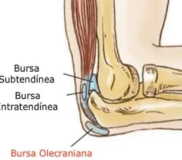
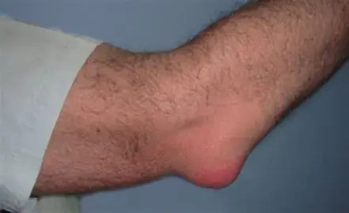
Imagens dos slides da aula: as bursas do cotovelo (subtendínea, intratendínea e olecraniana) e um cotovelo com bursite olecraniana.
No diagnóstico, há aumento de volume por derrame (líquido aumentado) e sinais inflamatórios clássicos, menores ou maiores: flogose, inchaço e dor. O líquido é sinovial e, em geral, sem sinais de infecção.
Dor forte, vermelhidão e até febre: a bursa pode ter infectado, e aí é outro problema, a bursite infectada. Às vezes a infecção vem de uma agulha usada para aspirar o líquido.
O tratamento segue a mesma receita: talvez uma tipoia (a órtese do punho não serve aqui) e orientar a não bater nem apoiar o cotovelo na mesa, a maior causa, já que dói pouco e a pessoa continua apoiando. Ocasionalmente, opera-se para ressecar a bursa inteira; ela para de produzir líquido e se refaz depois de um tempo.
O tríceps também pode ter tendinite na inserção. Quando um pouco do tendão se rompe, o corpo reage como numa fratura e calcifica, como no esporão de calcâneo. Não é doença: depois da consolidação vem o remodelamento, o osso fica maduro e para de doer. Isso pode levar um ano.
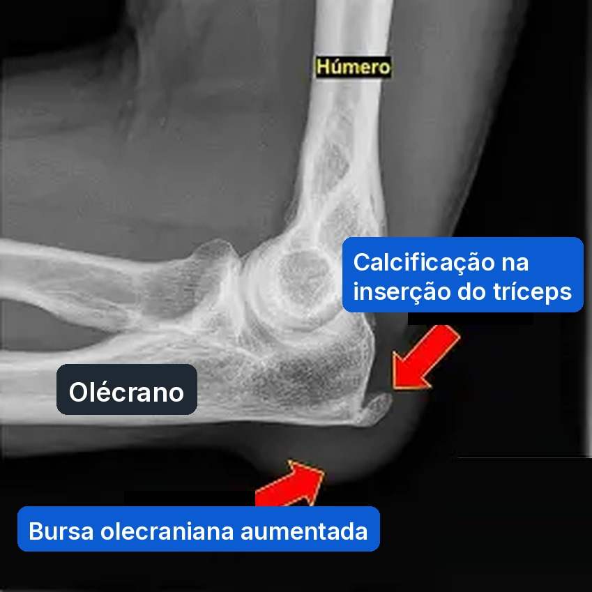
Imagem dos slides da aula: radiografia do cotovelo de perfil, com os rótulos em português.
O ombro é uma articulação rasa; o quadril, ao contrário, tem um encaixe grande, o acetábulo. Para a cabeça do úmero não subir e bater no acrômio, os músculos do manguito rotador precisam funcionar bem. Entre os dois ficam o supraespinhoso, parte do manguito, e a bursa subacromial, logo abaixo do acrômio. O cabo longo do bíceps passa por dentro da articulação e se prende no alto da glenoide; o bíceps tem também um cabo curto.
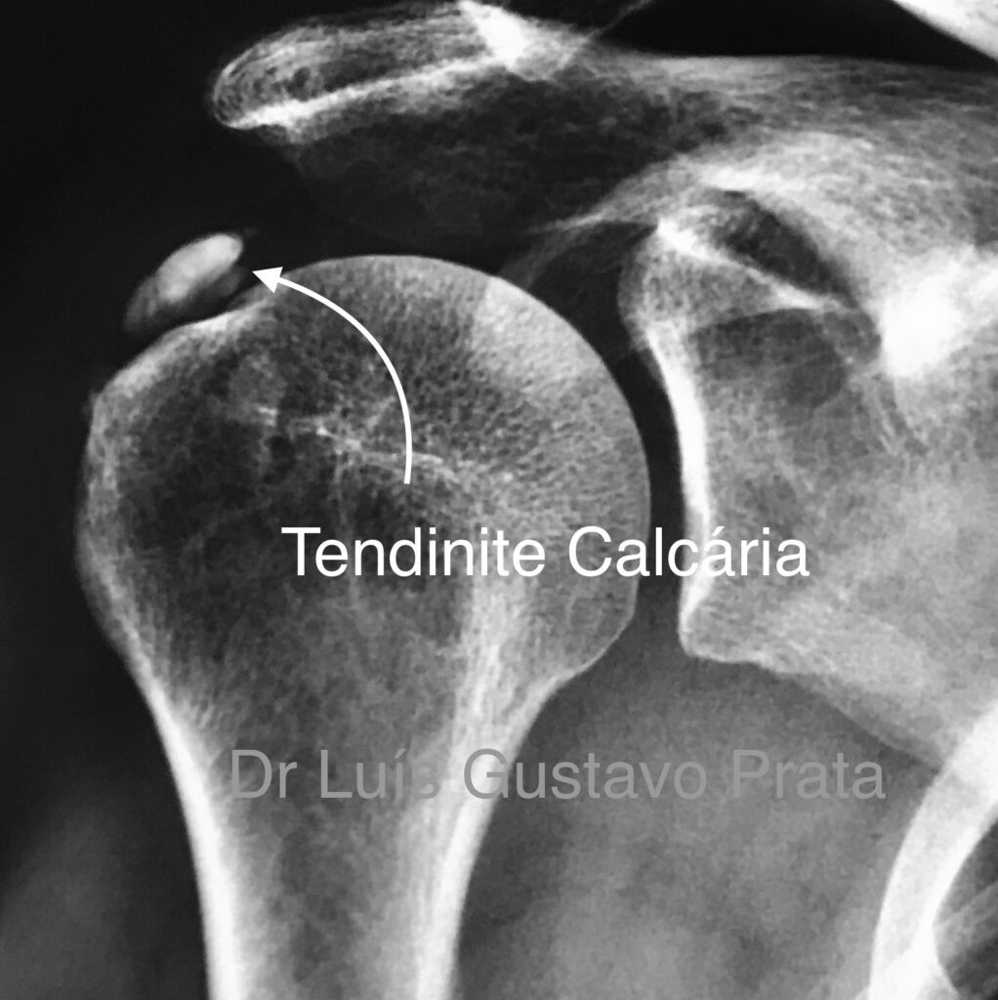
Imagem dos slides da aula, com o crédito do Dr. Luiz Gustavo Prata que aparece nela.
Na tendinite calcária, o depósito de cálcio aparece no raio-X (é radiopaco) e muitas vezes é reabsorvido e some; ao vivo, parece pasta de dente branca. Se o manguito não funciona bem, o úmero bate lá em cima e faz a bursite. Já no quadril, de encaixe bom, um músculo rompido compromete menos a função; o ombro é só um anteparo.
Nos livros: o depósito da tendinite calcária é formado por cristais de hidroxiapatita de cálcio.
No quadril, a dor do lado de fora costuma ser de bolsa e de tendão do glúteo, fora da articulação. No joelho e no pé há várias bolsas que incham com pancada ou carga. O esporão e as calcificações do calcanhar são o corpo cicatrizando e quase sempre param de doer sozinhos.
As bursites e tendinites do quadril atrapalham subir e descer da cadeira, sair do carro, subir escada e erguer a perna. Quem sustenta esse movimento é a musculatura abdutora, o glúteo, muito importante para estabilizar a perna e a lombar. São doenças extra-articulares, de bursas e tendões, diferentes da artrose, que é intra-articular. Bursite e tendinite costumam vir juntas, porque as estruturas são vizinhas.
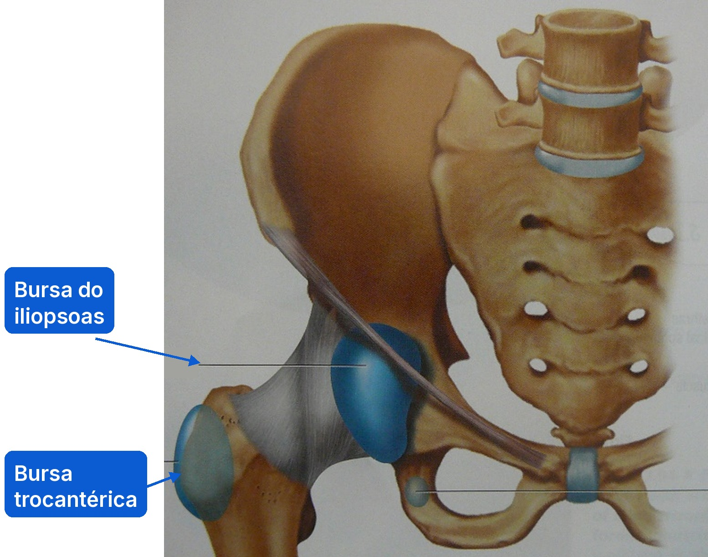
Imagem dos slides da aula, com os rótulos em português.
A bursite pré-patelar, na frente da patela, costuma vir de pancada: a bursa fica muito inchada e extensa. O joelho tem outras bursas que doem: a da pata de ganso, que dá dor com frequência; a infrapatelar, embaixo, na inserção do tendão extensor; e a suprapatelar, em cima. Muitas vezes a bursite vem junto com tendinite.
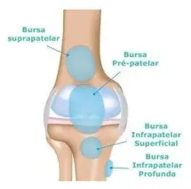
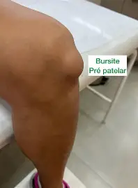
Imagens dos slides da aula: as bursas do joelho e um joelho com bursite pré-patelar.
A fasciíte plantar é muito frequente em quem caminha e corre muito: é a dor da fáscia que ajuda a manter o arco plantar. Na radiografia, ela pode deixar o esporão de calcâneo, uma calcificação embaixo do calcanhar.
Quando o esporão começou a aparecer no raio-X, os médicos passaram a operá-lo, achando que ele espetava e machucava ao pisar. Depois se descobriu que é um processo natural da inflamação da origem da fáscia plantar: quando calcifica totalmente, na grande maioria das vezes, para de doer.
Dá para infiltrar, fazer fisioterapia para alongar essas estruturas e melhorar a parte biológica, mas quem resolve é o próprio corpo, cicatrizando.
Na inserção do tendão calcâneo (Aquiles) também se formam calcificações. Quem rompe o Aquiles normalmente já vinha com uma dor antiga, crônica: o tendão arrebenta porque está doente, não porque o trauma foi muito forte. Também pode haver tendinite na inserção, e nem todas calcificam. Há uma bursa na frente do tendão (retrocalcânea) e outra atrás dele (subcutânea do calcâneo), que também podem inflamar.
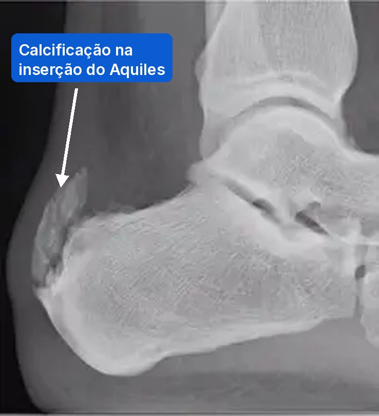
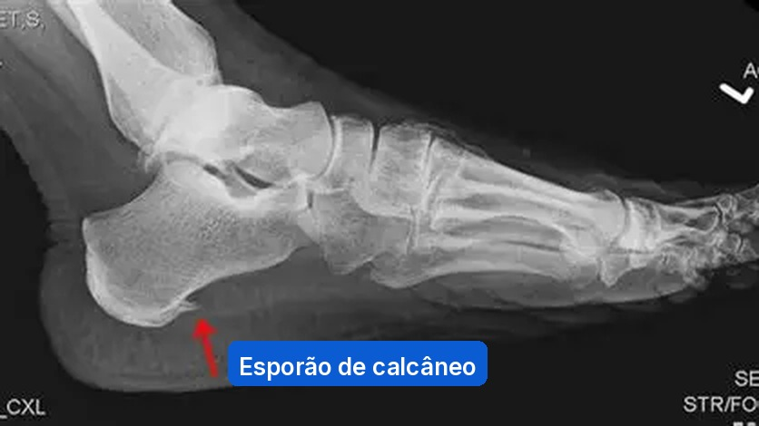
Imagens dos slides da aula: radiografias do calcâneo de perfil, com os rótulos em português.
No impulso da marcha, o peso cai sobre as cabeças dos metatarsos. O coxim de gordura que fica ali, como uma espuma de colchão de alta densidade, pode se danificar ou sair do lugar e machucar a bursa. O tratamento é uma palmilha que joga o apoio um pouco para trás das cabeças (apoio retrocapital), para aliviar a região e esperar a cicatrização.
“Normalmente, é melhorar o estilo de vida da pessoa, e ela entender que isso tem muito a ver com ela e não com o remédio. O remédio, muitas vezes, serve para deixar a pessoa mais confortável.”
Tendão tem pouca vascularização (microcirculação): cicatriza pior que o músculo.
Idiopático é o que ainda não se explicou; não serve para causa conhecida.
Tendinopatia não é entorse: no trauma, o ligamento sadio rompe; o tendão adoece.
Descalço, 10% do peso fica no antepé e 90% no retropé. Salto todo dia leva à bursite da cabeça do quinto metatarso.
Falta de uso sobrecarrega: sedentarismo atrofia, e é o músculo que divide o esforço.
Raio-X diz o que não é; ultrassom faz diagnóstico estrutural; ressonância, estrutural e fisiológico das estruturas profundas.
Correlação clínico-radiológica: o achado do exame tem de explicar a queixa.
Tratamento: biomecânica, dor e condições biológicas; o básico é o estilo de vida.
Repouso total só na fase aguda; depois, relativo. Imobilizar muito tempo atrofia.
Médico, fisioterapeuta e paciente como parceiros; a cura pode levar seis meses.
De Quervain: no teste de Finkelstein (polegar na palma, mão fechada, punho para o lado da ulna), dói sobre o processo estiloide do rádio.
Epicondilite lateral (tenista): extensores do punho, nervo radial; medial: golfista.
Bursite olecraniana com dor forte, vermelhidão e febre: desconfie de infecção.
Ombro: o manguito falha, o úmero sobe, bate no acrômio e esmaga a bursa: bursite.
Esporão de calcâneo não se opera: é a fáscia plantar calcificando, e para de doer.
O Aquiles rompe porque já estava doente: antes vinha uma dor crônica.